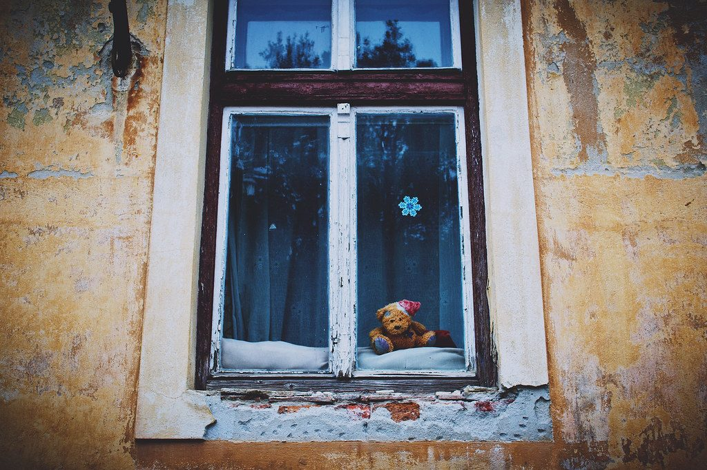
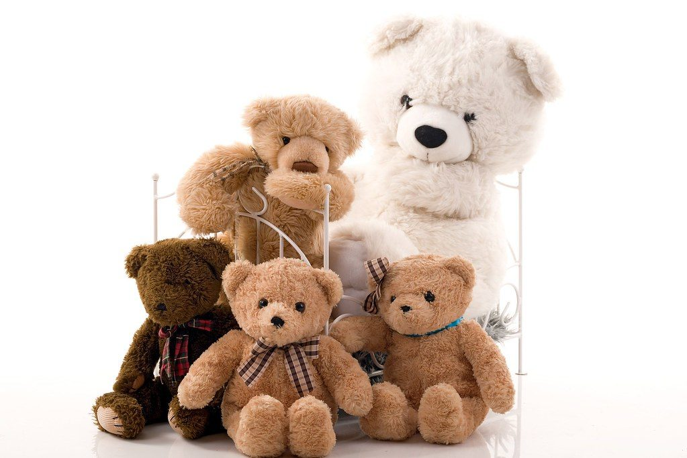
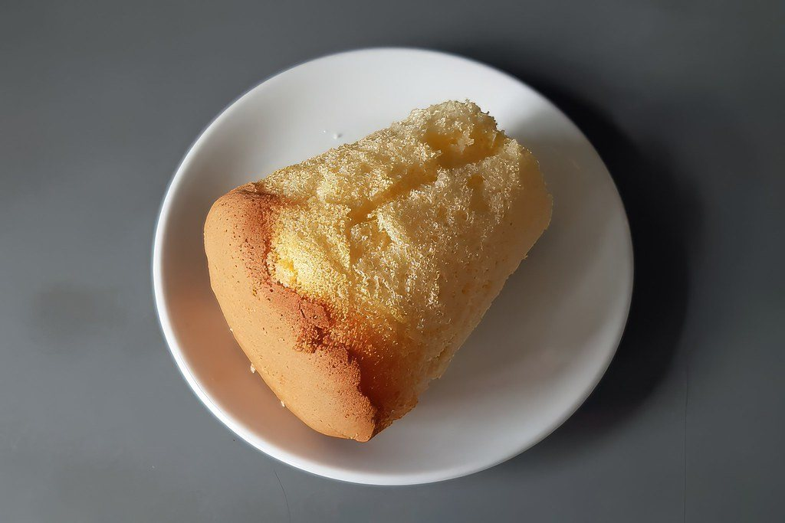
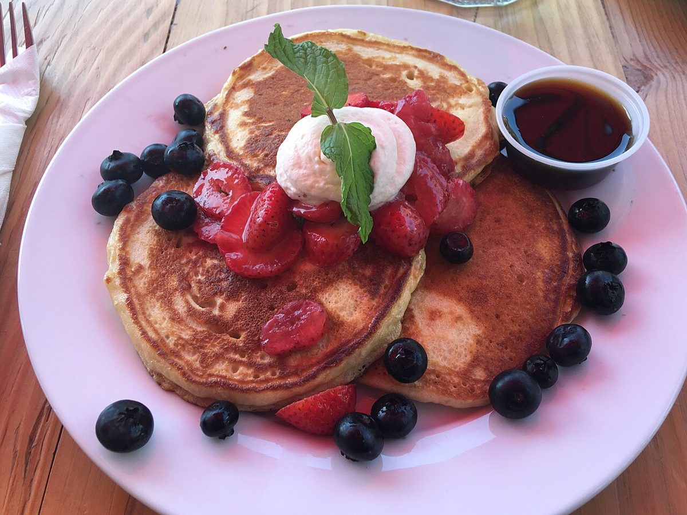
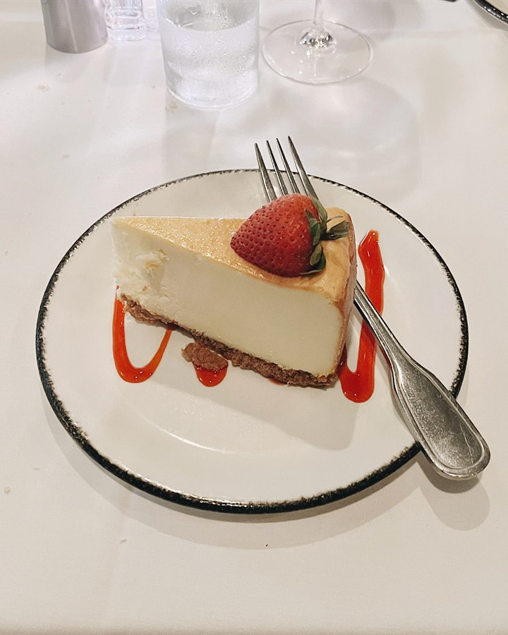
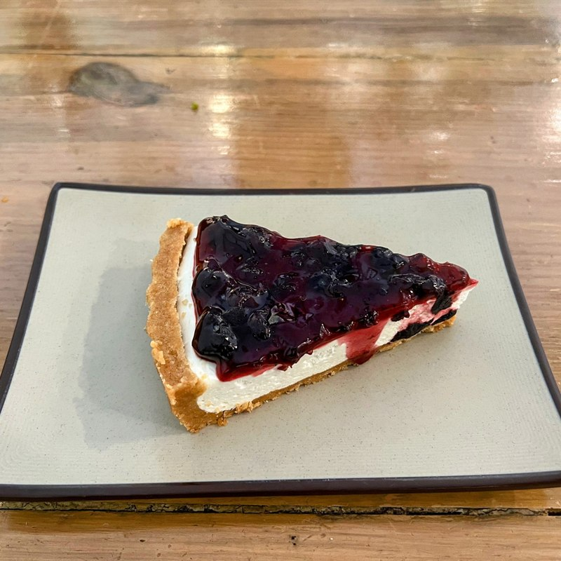
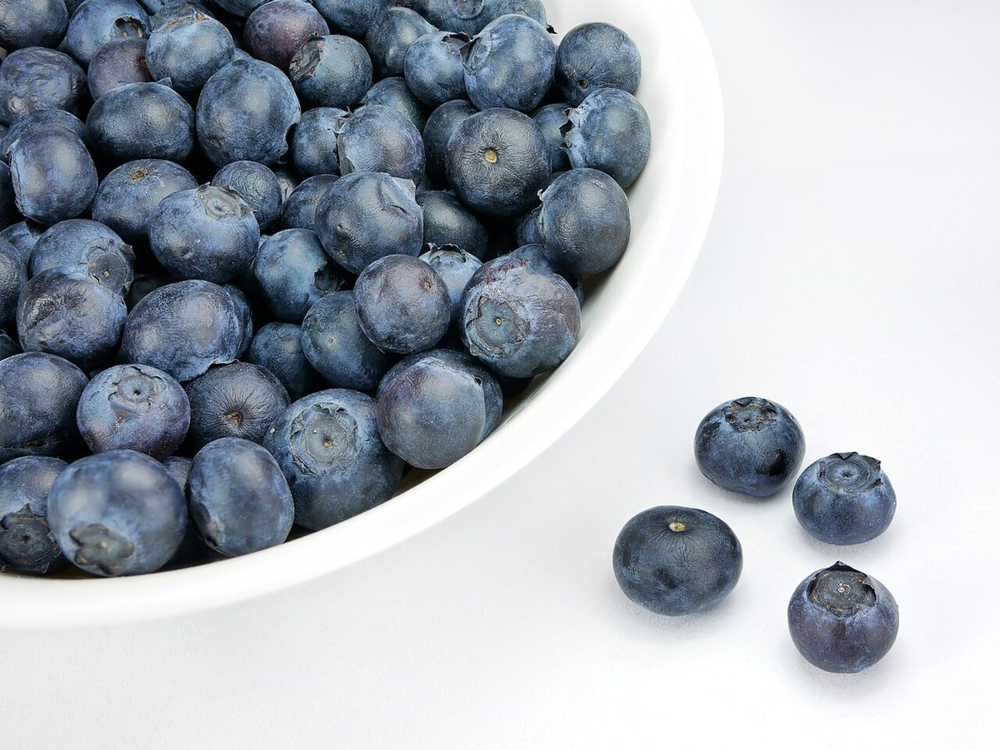

CAFE / 愛媛県大洲市常磐町
カフェ・レルCafe Lelut
おもちゃ屋さんだった場所が、ごはんとお菓子で人が集まる、あたたかな遊び場になりました。

お店のこと
カフェ・レルは、大洲市常磐町で長く親しまれた「おもちゃのモリモト」の跡地に、2024年5月30日にオープンしたお店です。通販でおもちゃが買える時代になり、地元の需要が減って閉店した建物を、地域の人が集まる憩いの場として生まれ変わらせたい。そんな思いから、店主のご家族で始められたと紹介されています。
店名の「Lelut(レル)」は、フィンランド語で「おもちゃ」の意味。店内にも、おもちゃ屋さんだった頃を思わせる飾りがあるそうです。ランチはお母様(管理栄養士)、スイーツは息子さん(パティシエ)が担当しています。
※掲載記事の内容をもとにした紹介です。店名の表記は、現在「Cafe Lelut」とされている情報もあります。

メニュー
日替わりのランチと、14時からのカフェタイムが紹介されています。内容は日によって変わります。価格・営業時間・定休日の詳細は準備中です。

手づくりチーズケーキ
パティシエの手づくりスイーツ。

ワッフル
14時以降のカフェタイムに。

シフォンケーキ
やさしい甘さのお菓子。

コーヒー
スイーツに合うオリジナルのコーヒー。

ベリーのスイーツ
大洲産のいちごやブルーベリーを使った一品が紹介されています。

日替わりランチ
1日30食限定。内容はInstagramで紹介されます。
価格・営業時間・定休日:準備中



口コミ イメージ例
以下は雰囲気を伝えるための創作です。実際のお客様の声ではありません。
ランチのおかずが少しずつ並んでいて、どれも体にやさしい味でした。
ご来店のお客様(イメージ)
午後のケーキとコーヒーで、ゆっくり一息つけました。
ご来店のお客様(イメージ)
昔おもちゃ屋さんだったと聞いて、懐かしい気持ちになりました。
ご来店のお客様(イメージ)

写真クレジット
掲載の写真はフリー素材のイメージで、店舗の実際の様子ではありません。
- teddy-window.jpg「Teddy Bear」freestocks.org / CC0 1.0 / creativecommons.org / 撮影地:ルーマニア・シビウ(Flickrタグより)
- teddy-family.jpg「Teddy bear family」Wallboat / CC0 1.0 / creativecommons.org / 撮影地不明
- pistachio.jpg「Pistachio cheesecake - Blossom Cafe Bar 2024-07-15」Andy Li / CC0 / creativecommons.org / 撮影地不明
- basque.jpg「Basque cheesecake」(Wikimedia Commons curid=154818118)Andy Li / CC0 1.0 / creativecommons.org / 撮影地不明
- cheese-strawberry.jpg(WordPress Photo Directory)Eleonora Anzini / CC0 / creativecommons.org / 撮影地不明
- tart.jpg(WordPress Photo Directory)Alina Kakshapati / CC0 / creativecommons.org / 撮影地不明
- waffle.jpg「A cookie plate」Altitonantis / CC0 1.0 / creativecommons.org / 撮影地不明
- chiffon.jpg 喫茶そらや(Flickr: chooyutshing)/ パブリックドメインマーク 1.0 / creativecommons.org / 撮影地不明
- latte.jpg「The cup of coffee on a wooden table」Artem Beliaikin / CC BY 2.0 / creativecommons.org / 撮影地不明
- berries.jpg「Pancakes with fruit」Nightcrafter / CC BY-SA 4.0 / creativecommons.org / 撮影地不明
- window-coffee.jpg「Coffee, flowers and books (Unsplash)」Juja Han / CC0 1.0 / creativecommons.org / 撮影地不明
- blueberries.jpg「Dish of blueberries」Petar Milošević / CC BY-SA 4.0 / creativecommons.org / 撮影地不明